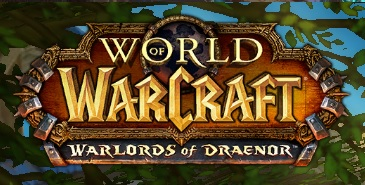
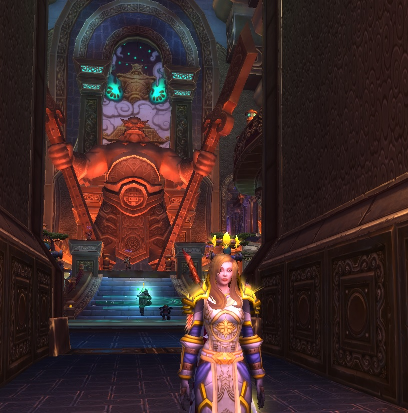

There are many online games nowdays but when World of Warcraft(Wow) came at 2004 there weren't many of them and they were not as popular as nowdays. This nowdays known as largest online game with great base of players had no different beginning than any other - just average popularity. There is much more to be said about this game but this is all just a place holder, so maybe some other time. Many critics has reviewed World of Warcraft as fantastic albeit not too original game.
During its primal years of reign World of Warcraft has astonished masses with amount of expansions and new features that have been implemented. Old content wasn't forgotten either and great improvements have been introduced every year. Wow base of players grew to fanthastic and unbelivable 15 mln of players throught the world thus becoming the larget mmorpg of times. uring its primal years of reign World of Warcraft has astonished masses with amount of expansions and new features that have been implemented. Wow base of players grew to fanthastic and unbelivable 15 mln of players throught the world thus becoming the larget mmorpg of times. uring its primal years of reign World of Warcraft has astonished masses with amount of expansions and new features that have been implemented. Old content wasn't forgotten either and great improvements have been introduced every year. Wow base of players grew to fanthastic and unbelivable 15 mln of players throught the world thus becoming the larget mmorpg of times. Old content wasn't forgotten either and great improvements have been introduced every year. Wow base of players grew to fanthastic and unbelivable 15 mln of players throught the world thus becoming the larget mmorpg of times.  Old content wasn't forgotten either and great improvements have been introduced every year. Wow base of players grew to fanthastic and unbelivable 15 mln of players throught the world thus becoming the larget mmorpg of times. uring its primal years of reign World of Warcraft has astonished masses with amount of expansions and new features that have been implemented. Old content wasn't forgotten either and great improvements have been introduced every year. Wow base of players grew to fanthastic and unbelivable 15 mln of players throught the world thus becoming the larget mmorpg of times. Old content wasn't forgotten either and great improvements have been introduced every year.  Wow base of players grew to fanthastic and unbelivable 15 mln of players throught the world thus becoming the larget mmorpg of times. uring its primal years of reign World of Warcraft has astonished masses with amount of expansions and new features that have been implemented. Old content wasn't forgotten either and great improvements have been introduced every year. Wow base of players grew to fanthastic and unbelivable 15 mln of players throught the world thus becoming the larget mmorpg of times. uring its primal years of reign World of Warcraft has astonished masses with amount of expansions and new features that have been implemented. Old content wasn't forgotten either and great improvements have been introduced every year. Wow base of players grew to fanthastic and unbelivable 15 mln of players throught the world thus becoming the larget mmorpg of times. uring its primal years of reign World of Warcraft has astonished masses with amount of expansions and new features that have been implemented. Old content wasn't forgotten either and great improvements have been introduced every year. Wow base of players grew to fanthastic and unbelivable 15 mln of players throught the world thus becoming the larget mmorpg of times. Old content wasn't forgotten either and great improvements have been introduced every year. Wow base of players grew to fanthastic and unbelivable 15 mln of players throught the world thus becoming the larget mmorpg of times. uring its primal years of reign World of Warcraft has astonished masses with amount of expansions and new features that have been implemented. Old content wasn't forgotten either and great improvements have been introduced every year. Wow base of players grew to fanthastic and unbelivable 15 mln of players throught the world thus becoming the larget mmorpg of times. uring its primal years of reign World of Warcraft has astonished masses with amount of expansions and new features that have been implemented. Old content wasn't forgotten either and great improvements have been introduced every year. Wow base of players grew to fanthastic and unbelivable 15 mln of players throught the world thus becoming the larget mmorpg of times. Old content wasn't forgotten either and great improvements have been introduced every year. Wow base of players grew to fanthastic and unbelivable 15 mln of players throught the world thus becoming the larget mmorpg of times. uring its primal years of reign World of Warcraft has astonished masses with amount of expansions and new features that have been implemented. Old content wasn't forgotten either and great improvements have been introduced every year. Wow base of players grew to fanthastic and unbelivable 15 mln of players throught the world thus becoming the larget mmorpg of times. uring its primal years of reign World of Warcraft has astonished masses with amount of expansions and new features that have been implemented. Old content wasn't forgotten either and great improvements have been introduced every year. Wow base of players grew to fanthastic and unbelivable 15 mln of players throught the world thus becoming the larget mmorpg of times. Wow base of players grew to fanthastic and unbelivable 15 mln of players throught the world thus becoming the larget mmorpg of times. uring its primal years of reign World of Warcraft has astonished masses with amount of expansions and new features that have been implemented. Old content wasn't forgotten either and great improvements have been introduced every year. Wow base of players grew to fanthastic and unbelivable 15 mln of players throught the world thus becoming the larget mmorpg of times. Old content wasn't forgotten either and great improvements have been introduced every year. Wow base of players grew to fanthastic and unbelivable 15 mln of players throught the world thus becoming the larget mmorpg of times.
World of Warcraft copied other game ideas but implemented them much better.
Wow base of players grew to fanthastic and unbelivable 15 mln of players throught the world thus becoming the larget mmorpg of times. uring its primal years of reign World of Warcraft has astonished masses with amount of expansions and new features that have been implemented. Old content wasn't forgotten either and great improvements have been introduced every year. Wow base of players grew to fanthastic and unbelivable 15 mln of players throught the world thus becoming the larget mmorpg of times. Old content wasn't forgotten either and great improvements have been introduced every year. Wow base of players grew to fanthastic and unbelivable 15 mln of players throught the world thus becoming the larget mmorpg of times. uring its primal years of reign World of Warcraft has astonished masses with amount of expansions and new features that have been implemented. Old content wasn't forgotten either and great improvements.
There are many positives in World of Warcraft, just some named in this review. Unfortunately no game is free of irritable bugs and badly implemented solutions. World of warcraft is no different. There are many positives in World of Warcraft, just some named in this review. Unfortunately no game is free of irritable bugs and badly implemented solutions. World of warcraft is no different.There are many positives in World of Warcraft, just some named in this review. Unfortunately no game is free of irritable bugs and badly implemented solutions. World of warcraft is no different.
Positives
Negatives